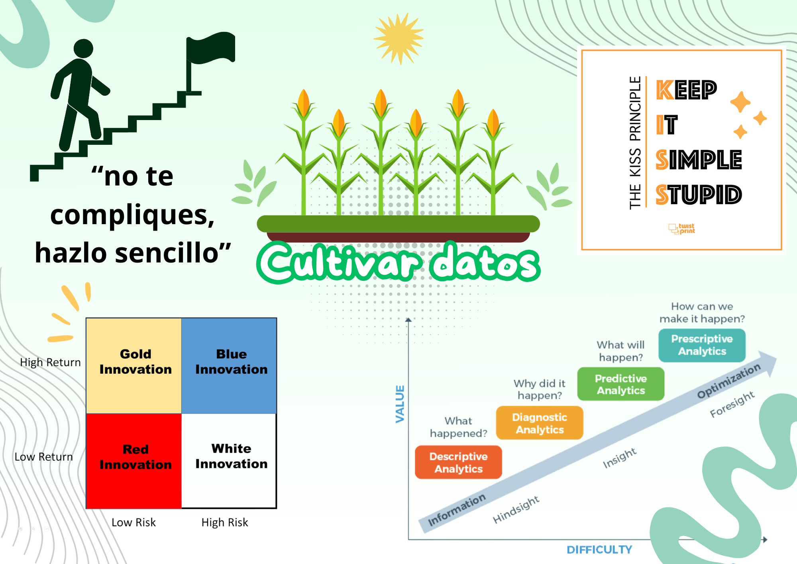
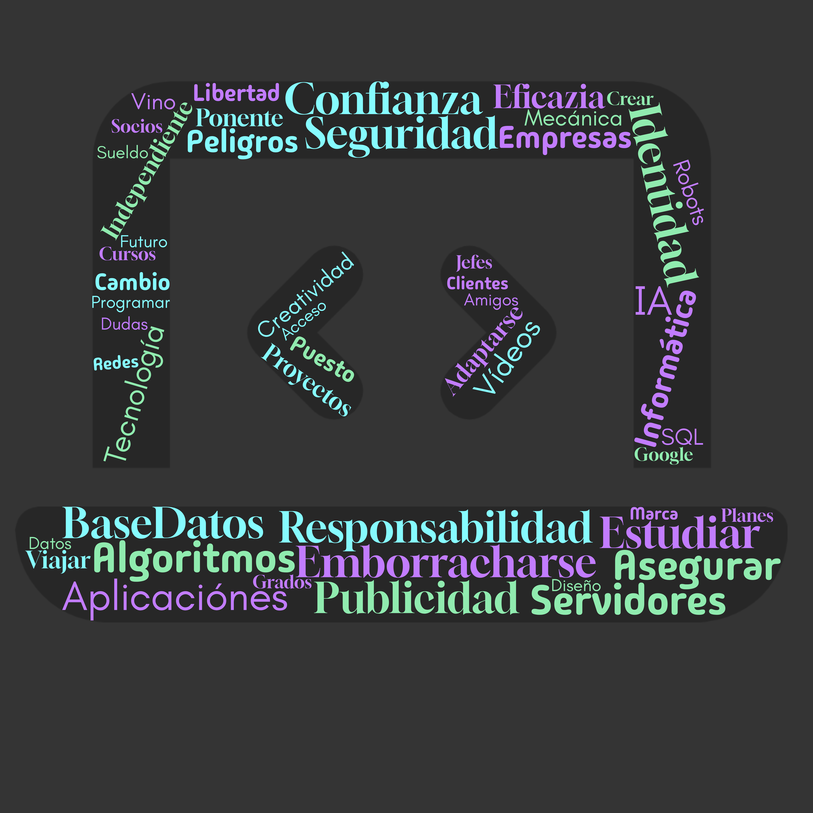

¿Qué son las Jornadas Tecnológicas?
Las Jornadas Tecnológicas 2025 son un espacio de inspiración, aprendizaje y networking donde estudiantes, profesionales y empresas se reúnen para compartir conocimientos, experiencias y oportunidades del mundo digital.

Infografía resumen

Conceptos clave tratados
¡No te pierdas la próxima edición!
Explora nuevas tecnologías, conoce empresas punteras y descubre tu vocación profesional.